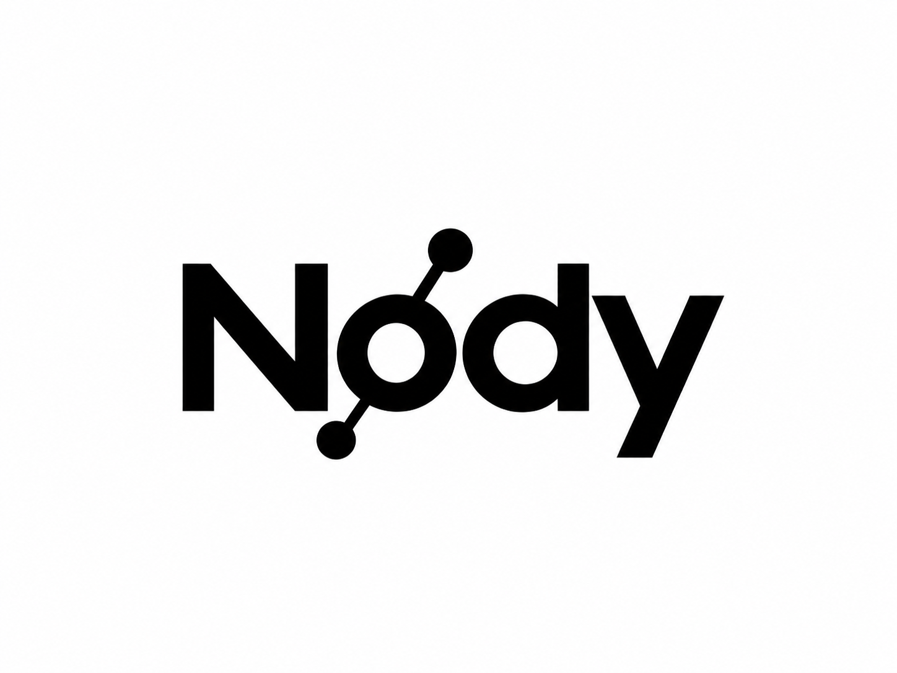
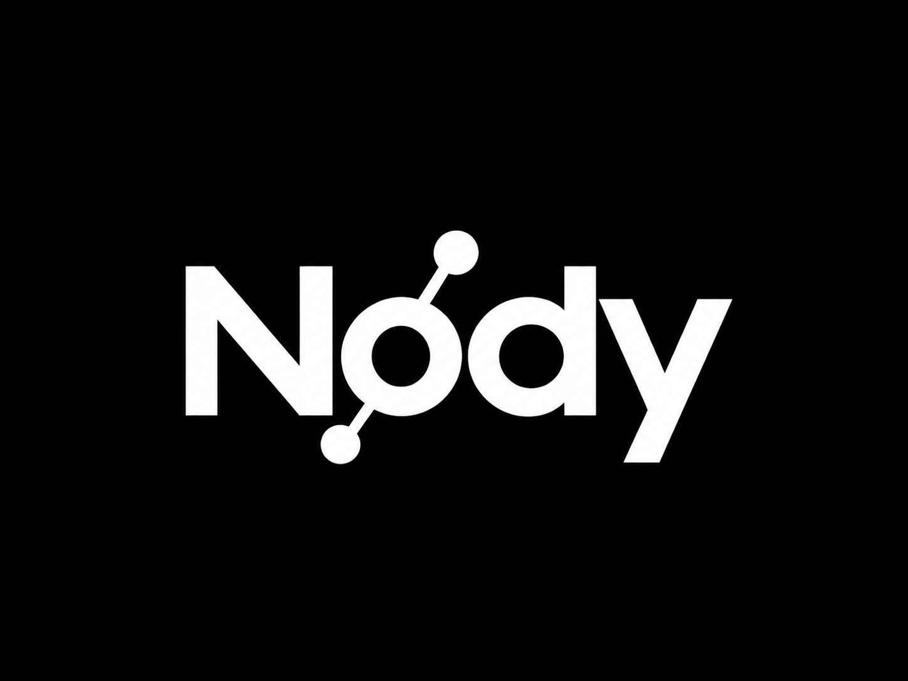
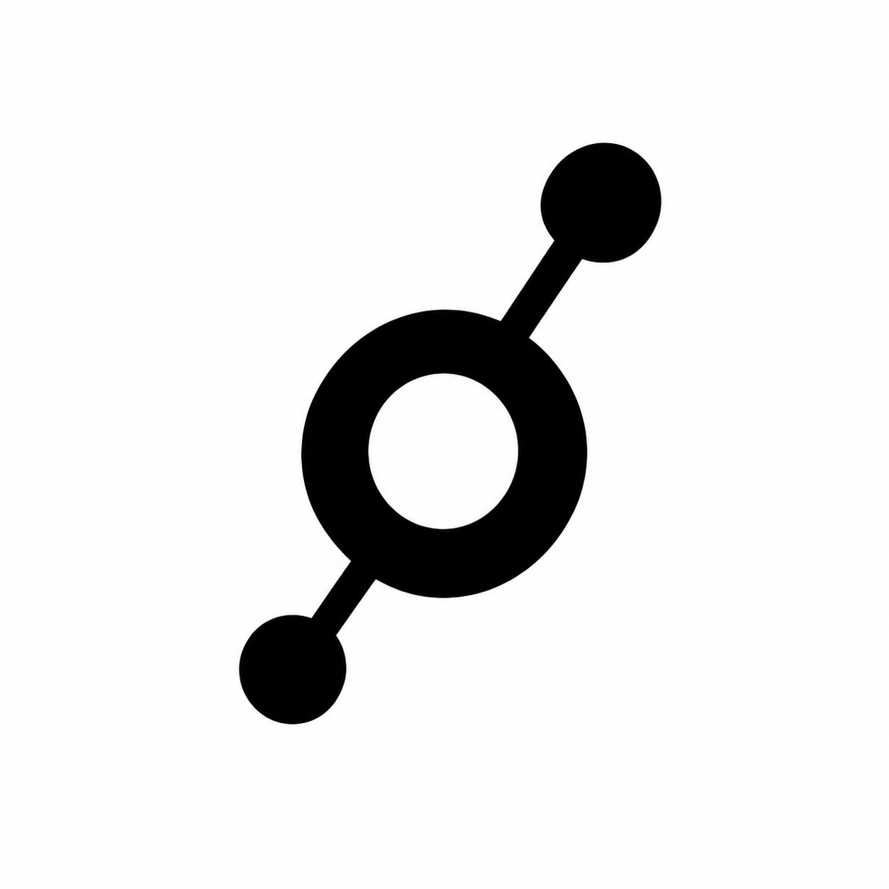
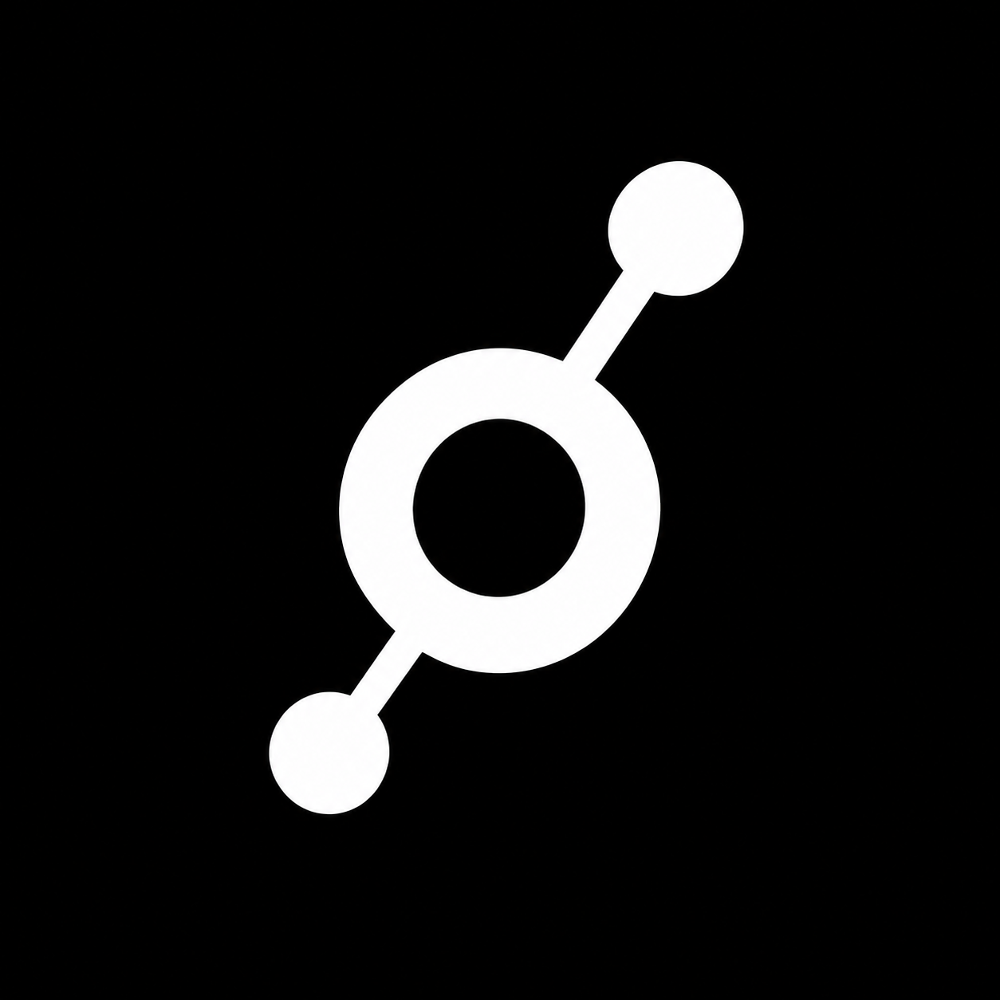

Foundations / Identity
Nody logos
Logo assets in light and dark variants, plus editable SVG drafts for the workspace UI.
PNG logo assets
High-resolution supplied artworkWordmark · light

logo/nody-light.pngDownload PNG
Wordmark · dark

logo/nody-dark.pngDownload PNG
App mark · light

logo/nody-icon-light.pngDownload PNG
App mark · dark

logo/nody-icon-dark.pngDownload PNG
SVG wordmarks
Editable horizontal lockupsOn light
logo/nody-wordmark.svgDownload SVG
On dark
logo/nody-wordmark-inverse.svgDownload SVG
Standalone app marks
Square iconAccent
logo/nody-symbol.svgDownload SVG
Monochrome
logo/nody-symbol-mono.svgDownload SVG
Direction
- The node layout ties the identity to nested workspaces and pages.
- Blue is reserved for the primary brand mark; monochrome is available where color is constrained.
- Keep clear space around the mark and do not stretch or add effects.